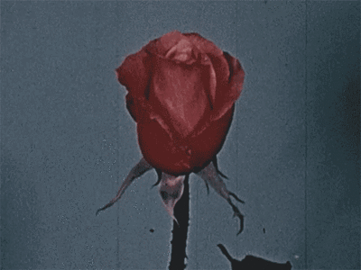

In the depths, I found a chamber that did not belong to the world.
It was quiet, yet filled with a presence that watched without eyes.
I entered, not as a guest, but as something that had always been expected.

philemon